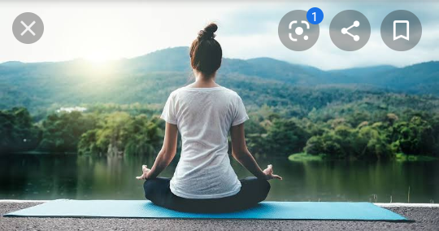
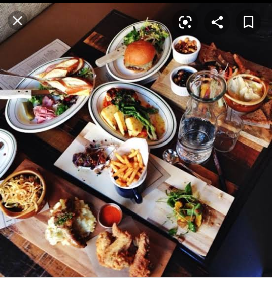
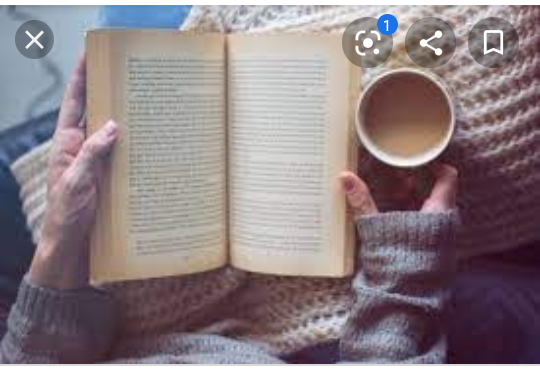
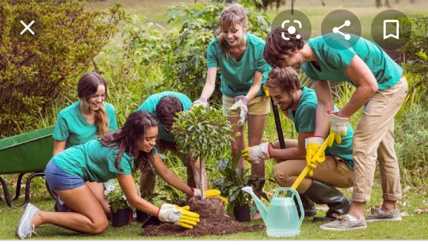
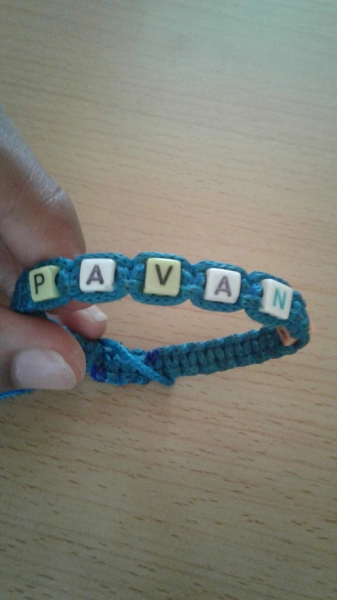

IZZ UR BOY BACK TO GIVE U GUYS A NEW MASTERPIECE🤣🤣!! Hope u all enjoy it.
So recently, i got news that a very successful, brilliant and highly talented actor committed suicide. Before u all get bored and start saying what a boring topic ive brought up 😉😜(despite the hype i had created that something interesting is coming up) lemme clear myself- im not talking about suicide specifically.
Its not news now that we r in lock-down. This lock-down has some pros and cons. This lock-down has caused pple to be socially and mentally distanced from their friends and close ones etc- yes there is video calls and all, but the fun isnt there in the calls as compared to the live meeting, right?!!! This can cauz a trauma on pple's mental stress therefore leading to depression. Depression doesnt mean ur crazy or need to be admitted to mathare asylum.
Im not being a psychiatrist or a mental counselor but i wanna reach out to pple who may be captives of depression, loneliness or boredom and share some tips that ive followed to kill these negative thoughts. I hope u can try some of these tips and hopefully they will help u guys out too. So here they go😃:
You may not be knowing but yoga can help drive away negative thoughts and keep you positive and fit. It helps you keep mentally stable and even happy and vibrant thruout the day. It is said u should smile more often than frowning since smiling uses more muscles than frowning so in one way or another u are working those muscles 😂😁✌so if u smile for gf ama bf ushawork out😂.Btw hata me nimework out so hata u guys msifure kama mandazi.
This may help keep u busy and enhance ur creativity levels, therefore without saying keep u miles away from boredom. Furthermore it can elevate ur talent and even help u discover ur new skills. And dont please urself by just making this trend of dalgona coffee, make a proper 3 course meal for ur fam and see the smile u bring on their face, esp ur parents. They will be extremely proud of u, and i bet u can do that for them and play ur part too. Yes use utube,and i know it wont be perfect in the first trial but that doesnt mean u give up try again and again.
Reading helps expand one's IQ, gain knowledge, change a mindset, and elevate ur thinking capacity. Its not a must u read educational books, read whatever genre u like but read positive books that will bring and create a positive vibe around u.
Try helping out the needy pple in the society, make donations not necessarily financially like providing hungry pple food, carrying out tree planting projects, cleaning the neighbor hood etc. Although this may seem very vague to some of us but u never know unknowingly u might have made some less privileged persons ends meet for the day. These small small efforts may not seem very exciting but the joy they bring to urs and the receivers face will make ur heart at peace.
All in all it would be great if u would try the above the ideas and notice the change that i experienced too. It is quite relaxing and breathtaking. It may also bring u closer to ur friends and fam members, try calling and checking up on ur friends to see if they r ok - keep a check on them oftenly. U never know what turmoil one is going thru during this difficult time- this helps to lower these suicidal thoughts and negativity one may be surrounded by.
Before i forget, guys im selling bands which u can buy from me. Im putting the pic below. It costs barely 200 bob and the strings used to make them r high quality and come in mostly black or blue colours. The letters r custom made therefore u can tell me what u would like written on them. For now im taking advance money bcz the artisan that i order to make them needs advance payment. As of now, im not doing delivery so u will personally hav to come to pick the band after its made. my contact number is 0731058714. And pls only interested guys to contact me 😊 U can also promote me in this way😉
Thats it for now, do tag me on insta{ super_cool_king } comment on ur view of the blog or on new ideas that u tried like ive mentioned, follow the site, share the site with friends and other contacts. Let me know what u guys would like me to highlight in my next blog. Thanks for the unconditional support and the positive feedback u guys hav shown. Till the next one hav a great time in this lock-down.
If you find the post interesting read the next post.
A Little Yellow